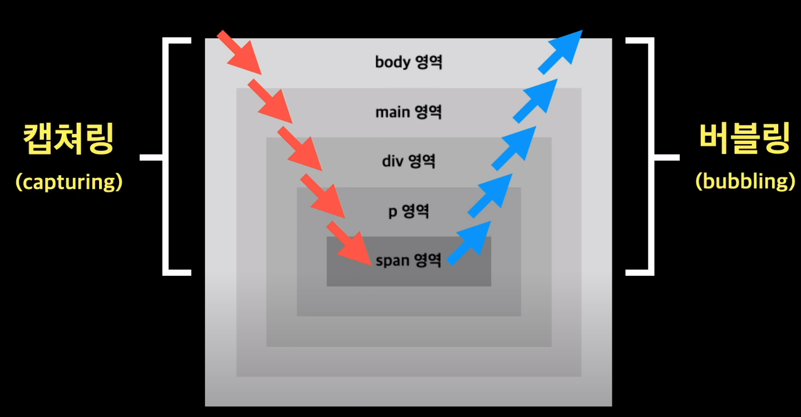

이벤트와 이벤트 처리기
이벤트 알아보기
이벤트란 : 사용자가 실행하는 어떤 동작
영역 : 웹페이지 ~ 웹 문서 영역에서 이루어지는 동작
문서 로딩 이벤트 : 서버에서 웹 문서를 가져오는 등 브라우저 창에 보여주는 것과 관련된 이벤트
| 이벤트 |
이벤트가 발생하는 순간 |
| abort |
웹 문서가 완전히 로딩되기 전에 불러오기를 멈추었을 때 |
| error |
문서가 정확히 로딩되지 않았을 때 |
| load |
문서 로딩이 끝났을 때 |
| resize |
문서 화면의 크기가 바뀌었을 때 |
| scroll |
문서 화면이 스크롤되었을 때 |
| unload |
문서를 벗어날 때 |
문서를 불러오자마자 알림창 표시
window.onload = alert("안녕하세요?");
| 이벤트 |
이벤트가 발생하는 순간 |
| click |
사용자가 HTML 요소를 클릭했을 때 |
| dclick |
사용자가 HTML 요소를 더블 클릭했을 때 |
| mousedown |
사용자가 요소에서 마우스 버튼을 눌렀을 때 |
| mousemove |
사용자가 요소에서 마우스 포인터를 움직일 때 |
| mouseover |
마우스 포인터를 요소 위로 옮길 때 |
| mouseout |
마우스 포인터가 요소를 벗어날 때 |
| mouseup |
요소 위에 올려놓은 마우스 버튼에서 손을 뗄 때 |
버튼을 클릭했을 때 문서의 배경색 변경
const button = document.querySelector("button");
button.onclick = function(){
document.body.style.backgroundColor = "green";
}
| 이벤트 |
이벤트가 발생하는 순간 |
| keydown |
키를 누르는 동안 |
| keypress |
키를 눌렀을 때 |
| keyup |
키를 손에서 뗄 때 |
키를 눌렀을 때 어떤 키인지 알아내는 법
const body = document.body;
const result = document.querySelector("#result");
body.addEventListener("keydown",(e)=>{
result.innerText = `
code : ${e.code},
key : ${e.key}
`;
});
| 이벤트 |
이벤트가 발생하는 순간 |
| blur |
폼 요소에 포커스를 잃었을 때 |
| change |
목록이나 체크 상태 등이 변경되었을 때 (input,select,textarea) |
| focus |
폼 요소에 포커스를 놓았을 때 (lable,select,textarea,button) |
| reset |
폼이 리셋되었을 때 |
| submit |
submit버튼을 클릭했을 때 |
선택 목록에서 옵션을 선택하면 chage 이벤트 발생 후 diplayselect함수를 연결
const selectMenu = document.querySelector("#major");
function displaySelect() {
let selectedText = selectMenu.options[selectMenu.selectedIndex].innerText;
alert(`[${selectedText}를 선택했습니다.]`)
}
selectMenu.onchange = displaySelect;
이벤트 처리하기
이벤트가 발생하면 그에 따른 연결 동작이 있어야 합니다.
이렇게 이벤트를 처리하는 것을 이벤트 처리기, 이벤트 핸들러 라고 함
html 태그에 함수 연결
<태그 on이벤트명 = "함수명">
<;button onclick="alert('클릭!')">Click<;button>
html태그에 스크립트와 함께 사용하다보니 스크립트의 함수명이 바뀐다면 html소스도 수정해야 함
웹 요소에 함수 연결하기
html마크업에는 영향 주지 않게 하려면 이벤트 처리기도 스크립트 소스에서 처리하는 것이 좋음.
DOM을 사용해 웹 요소를 가져온 후 프로퍼티로 함수를 연결
요소.on이벤트명 = 함수
버튼을 클릭해서 문서의 배경색 바꾸기
const button = document.querySelector("button");
button.onclick = function(){
document.body.style.backgroundColor = "green";
}
function changeBackground(){
document.body.style.backgroundColor = "green";
}
const button = document.querySelector("button");
button.onclick = changeBackground;
<;button onclick = "alert('클릭!')">Click<;/button>
const button = document.querySelector("button");
button.onclick = function(){
document.body.style.backgroundColor = "green";
};
이벤트 리스터로 이벤트 처리하기
요소.addEventListener(이벤트,함수,캡처 여부)
요소 : 이벤트가 발생한 요소
이벤트 : 이벤트 유형. 단 이벤트 앞에 on 붙이지 않고 그대로 사용
함수 : 이벤트가 발생할 떄 실행할 함수
캡처 여부 : 이벤트를 캡처링하는 지 여부 boolean타입
- 이벤트 리스터를 사용해 문서 배경색 바꾸기
function changeBackground(){
document.body.style.backgroundColor = "green";
}//기존 함수 연결
button.addEventListener("click",changeBackground)
//클릭 이벤트에 changeBackground를 실행
//button.addEventListener("click",()=>{
document.body.style.backgroundColor = "green";
})//이렇게 익명함수 나 위처럼 화살표 함수로 바로 작성할 수 있음
- 텍스트 필드에 입력한 글자 수 알아내기
length 프로퍼티를 활용
const button = document.querySelector("#bttn");
button.addEventListener("click",()=>{
const word = document.querySelector("#word").value;
const result = document.querySelector("#result");
let count = word.length;
result.innerText = `${count}`;
})
event 객체
event 객체의 프로퍼티와 메서드
| 프포퍼티 |
기능 |
| altKey |
이벤트 발생 시 alt를 누르고 있었는 지 확인하는 매서드, boolean반환 |
| button |
마우스 키값을 반환합니다. |
| charCode |
keypress이벤트 발생 시 어떤 키가 눌렸는 지 확인하는 매서드, 유니코드 반환 |
| clientX or ClientY |
이벤트가 발생한 가로, 세로 위치를 반환 |
| ctrlKey |
이벤트 발생 시 ctrl을 누루고 있었는 지 확인하는 매서드, boolean반환 |
| pageX or pageY |
현재 문서를 기준으로 이벤트가 발생한 가로, 세로 위치를 반환 |
| screenX or screenY |
현재 화면을 기준으로 이벤트가 발생한 가로, 세로 위치를 반환 |
| shiftKey |
이벤트 발생 시 shift를 누루고 있었는 지 확인하는 매서드, boolean반환 |
| target |
이벤트가 발생한 대상을 반환 |
| timeStamp |
이벤트가 발생한 시간을 밀리초 단위로 반환 |
| type |
발생한 이벤트 이름을 반환 |
| which |
키보드와 관련된 이벤트가 발생했을 때 키의 유니코드 값을 반환 |
| 메소드 |
기능 |
| preventDefault |
(취소할 수 있을 경우)기본 동작을 취소합니다. |
developer.mozilla.org/ko/docs/web/API/Event에서 event객체의 프로퍼티와 메서드 확인가능
마우스 이벤트에서 클릭 위치 알아내기
마우스 click 위치를 어디인지 알아야 할 경우가 있다면 event 객체를 활용해보자
const box = document.querySelector("#box");
box.addEventListener("click",(e)=>{
alert(`이벤트 발생 위치 : ${e.pageX},${e.pageY}`);
})
키보드 이벤트에서 키값 알아내기
enter나 좌우 클릭등으로 게임을 만들어본다면 event 객체를 활용해보자!
event.code, event.key
const body = document.body;
const result = document.querySelector("#result");
body.addEventListener("keydown",(e)=>{
result.innerText=`
code : ${e.code},
key : ${e.key}
`;
});
이벤트 전파
이벤트 버블링

html 을 계층화 시킨다면 이런식으로 구조가 생긴다.
<;form onclick="alert('form')">FORM
<;div onclick="alert('div')">DIV
<;p onclick="alert('p')">P<;/p>
<;/div>
<;/form>
p를 클릭한다면 이벤트가 전달되긴 하겠지만
이렇다면 p -> div -> form까지는 이벤트 처리기가 연결되어 있어 위 3개는 나오겠지만
나아가 상위 계층인 main, body, html요소에는 아무런 결과는 나오지 않는다.
이미지를 보면 span 에서 click 발생 후 body를 넘어 html까지 click 처리가 된다.
(자식 요소 -> 부모 요소 를 계속 반복하여 상위까지 거치는 것이다.)
event.target과 event.currentTarget
이벤트 발생 정보는 event 객체에 담겨짐
//모든 요소를 가져와서 elements변수에 저장
const elements = document.querySelectorAll('*');
//모든 요소를 순회하면서
//click 이벤트가 발생하면
//event.target인 태그 이름과 event.currentTarget인 태그 이름을 출력합니다.
for(let element of elements){
elemnt.addEventListener("click",e =>{
console.log('event.target :${e.target.tagName},
event.currentTarget :${e.currentTarget.tagName}');
})
}
//target은 p인데 currenttarget은 for문이 순회하면서 p부터 html까지 버블링 된다.
이벤트 캡처링
캡처링은 최상위 요소에서 이벤트가 발생한 요소까지 차례대로 이벤트가 전파되는 방식
const elements = document.querySelectorAll('*');
for(let element of elements){
elemnt.addEventListener("click",e =>{
console.log('event.target :${e.target.tagName},
event.currentTarget :${e.currentTarget.tagName}');
},true)
}
//이렇게 하면 위 매서드는 p부터 순회했지만
//지금 매서드는 html부터 순회하며 출력한다.